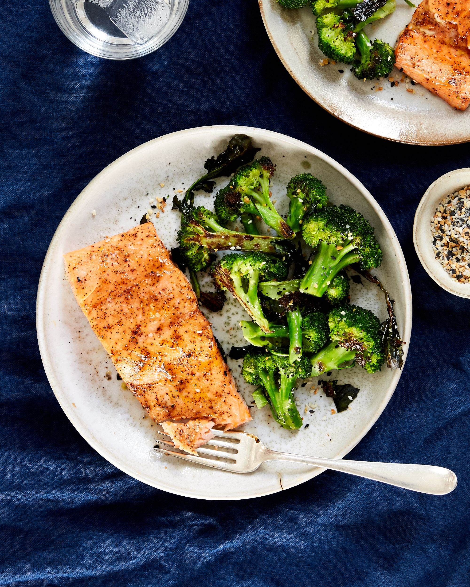

Cooked Salmon w/ broccoli

Simple salted salmon with boiled broccoli. Tasty and healthy for fans of fish!
Ingredients:
- Salted Salmon Fillet
- Broccoli
- Butter
- Olive Oil
Recipe:
- Pour some olive oil on the pan and heat it to mid high level.
- Wash the salmon with water and dry it with paper towel.
- Cook each side of the Salmon Fillet with seasoning of your choosing for about 5mins
- Boil the broccoli for about 5mins after dissolving the butter in the water.
- Serve the salmon and broccoli and enjoy the meal!